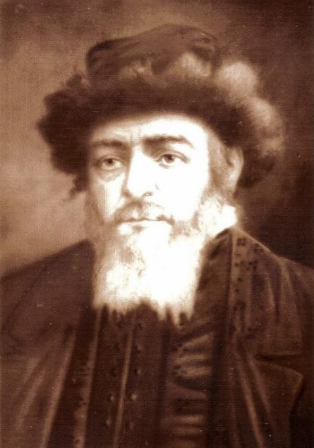

2 September 19th, 1946
By nature, tate was one of those types of people who would always be inspired by something. Needless to say, he was a chasid - a Makarover chasid. When he was able to tear himself away from his livelihood in the village, he left for Makariv to see the Rebbe1, and when he came back from there he was completely different and he would tell one story of the chiddush2 that he saw at the Rebbe’s, and he sang all the nigunim3 that he heard there.
In general, at our house, in the small village of Zatishiye, there was such a “geist” that you could literally see and feel how tate’s faith in God and in his Makarover Rebbe were connected with everything - When the business went well and we didn’t have any problems with the landowner, tate was sure that it was thanks to the blessings and wishes that the Makarover Rebbe gave him, and so, he should go the first chance he has to the Rebbe and give him the fine fruit and be joyous together with the other chasidim.

And on the other hand if, God forbid, business went poorly and people had to endure the landowner’s caprices, they really needed to go to the rabbi, pour out their bitter heart to him and beg for him to give his blessing and pray that God will help. Also, when something happened in the house and someone in the household was not healthy, the father of the family went to the Rebbe and asked him to grant him a refua shlema4. Believing in God and in them, holy rabbis, was connected. Even with the nigunim that we used to sing at home, during a simcha5, or even there heartache…
In his enthusiasm for the Makarover Rebbe, it wasn’t enough for tate that he drove to him from time to time; He also brought the Rebbe to our home a few times a year, and usually there was a great joy and the local Jewish farmers from all the surrounding shtetls came to us in Zatishiye. Weekly and during the three meals6, people swallowed with admiration every word that the Rebbe uttered from his mouth during the dvar toirah7 about the parshah8 of the week.
As far as my father could go in his enthusiasm for the Makarover tzadik9, you can imagine what happened when the Rebbe came to us in Zatishiye - when tate heard that the Rebbe had been spotted in his rickshaw at the gate of the village, he went out to meet him with a song, and singing like this, he unharnessed the horse from the rickshaw and accepting the reins with both hands, he himself led the great Rebbe in the rickshaw our home. You could see on his face that this gave him so much pleasure and he considers it such a great mitzvah that he would not give it up for all the treasures in the world.
To this day, I still have that picture in front of my eyes and I see tate so clearly, as he is carrying the Rebbe’s rickshaw and his face is shining with joy. I also remember what kind of joy there was in general at our house every time when tate brought down the Makarover Rebbe; The Jewish farmers of the neighboring villages, all simple healthy and strong Jews, but ardently chasidic and very pious, are suddenly very different people; It turned out that it was none other than the ruach-hakodesh10 who also started floating them. Just as if a miracle had happened, all of a sudden the rustic arrogance is gone from them and they entered into such a spiritual nobility that was never seen before.
And they sang with such fervor that it was a pleasure to listen to them, and they danced with such exuberance as if they were carrying themselves in the air… Among them, among the chasidim, for the first time in my life I saw how Jews dance. And I liked it so much that I went and danced with them… I was still a little boy then, and during the dance I fell flat on my feet. When my father saw that I was doing all the chasidic practices and I was singing along to the song, he was overjoyed with it and he gave me a pinch on the cheek: ’Well done, Shmuel’ikel - he said - “well done.”
The other chasidim were also very excited because I, a little boy, who is as big as an elf, entered and took over the manner of their dancing so quickly. And one of them, a prophet of the Makarover Rebbe, a man with a long beard, a reddish complexion, and with two long hands, very plump, said to my father afterwards: “Look, look, Leyb-Sender! He is indeed something very similar to you, the little one! … Well, may God help you, that you should devote yourself to the Torah and to the chuppah and to good deeds… He is growing, isn’t he… He is a growing vessel…”
Dancing is my love, so I planted myself between Jewish and goyishe dances. It didn’t matter to me, just dance. It was enough for me to hear some song, I started immediately dancing to it. I even went around the village dancing. And to this day, I don’t understand what was so great about me then, what made me so high in the air, that soon I was dancing… but there came a time when I stopped dancing and could not be as happy as usual. This was when tate suddenly started worrying about his health.
“I’m sick, Feige.” - he often said to mame - “I’m very sick… and somehow my heart tells me that it’s not good. Not good…”
He then went to the Rebbe several times and the Rebbe wished him a refua shlema, but it didn’t help. He complained to himself: I am sick, Feige, very sick. No matter how small I was, I still felt and understood that because he complains so often about his poor health, a very difficult time is falling on us, and this caused me a bitter blackness. And when I once got carried away, as is usually the case with a child, and I began to sing some kind of song, sometimes a Yiddish one and sometimes a goyishe one, and while singing, I began to dance along, mame scolded me: “You should be ashamed, Shmuel’ikel. ashamed; Father is sick and so are you…”
The whole house became a different place when tate became ill. And nothing was done about the illness, because in the village there was no doctor, no field doctor and not even a pharmacy. No matter how much they begged tate to bring him a doctor from Vasilkyv, or from Belaya-Tserkov, he did not want to. This was not possible for him in any way, and he had an answer to everything:: “What can a doctor help me with? How long I am destined to live in the world? Well, I’m alive…The doctor will not give me more years to live; A man is in God’s hands…’
With great difficulty, they worked with him to bring the doctor from Vasilychshina11, a kind of popular Jew, who had only one cure for all the diseases in the world. And he, the doctor from Vasilychshina, gave the father some prescription and told him that if things didn’t get better to call him again… At that time, my oldest sister, Bat-Sheva, was already engaged, and it is worth telling the story of how this match was made, because all around it is very characteristic of the Jewish life of that time:
Among the chasidim that my tate often met at the Makarover Rebbe’s court, there was one Pinya Radetsky. Radetsky, a Jewish landowner, lived in the town of Rybinka12, which is not far from Vasilychshina13 and just like my father, he was also an ardent chasid, a zealot, and he often went to the Makarover Rebbe’s. As it usually happens, at the rejoicings at the Rebbe’s court, people often drank l’chaim and wished for salvation for the Jews. And once, when my father was drinking l’chaim with Pinya Radetsky from the town of Rybinka, for a while they were already talking about this and that, whatever just came to the tongue; Each time, someone else poured a cup of brandy and, as usual, an “order” started:
- L’chaim! May God will it so!
- L’chaim tovim u’shalom! God bless you, and so it will be!
So, little by little, they drank another glass and another glass, and showered each other with blessings and wishes, and in the conversation that took place between them, my father told Pinya that His wife is pregnant and he hopes that, baruch hashem, the birth will pass peacefully. And when Pinya heard this, he got excited and told tate that his wife was also preparing to give birth. Soon, in the blink of an eye, it was already agreed between the two Makarover chasids that if the wife of one gave birth to an boy and the wife of the other gave birth to a girl, there should be a match.
And they shook hands, made a tekiyat-kaf14. And so it remained. A short time after that, my mother gave birth to a girl and she was named Bat-Sheva. Pinya Radetsky’s wife also gave birth to a boy and he was named Aaron. And so, as agreed in the tekiyat-kaf, because the wife of one chasid gave birth to a girl and the other gave birth to a boy, it was said that it is beshert and this is a marriage m’hashamayim15.
And so, my sister Bat-Sheva, the oldest of all the children in our family, was already a bride immediately after she was born. And that’s how she was really treated even when she was still a very little girl: “Bat-sheva, the bride.” Tate loved Bathsheba very much and he showed her a lot of tenderness, not only when she was still a little girl, but when also when she was grown, and he was looking forward to the time when they will lead her to the chuppah.
And just in that year, when it was decided to have Bat-Sheva’s wedding on the Shabbat after Shavuot, tate’s health was already so poor that it was no wonder that he couldn’t think about anything other than whether he would live to be with his first daughter at the wedding, or not… You could tell from how he suddenly started working to move the marriage from Shabbat after Shavuot to instead be two weeks before Pesach… “I want to be at the wedding of my eldest daughter,” - he said - “I want to take her to the chuppah…”
At that time, apparently, his knew in his heart that that he would not live for long. He felt it. Everyone in the family felt it. And therefore we decided not to wait for my sister Bat-Sheva’s wedding until until Shabbat after Shavuot, but rather two weeks before Pesach, as my father wishes… And they began to prepare for the great simcha, when, with God’s voice, they will lead to the couple, who were blessed with a tekiyat-kaf before they were born, to the chuppah. And while preparing for the wedding, people also prepared for a funeral…
You had to think about it, even when you didn’t want to, because tate was already so sick and he was feeling so bad that you knew that he would not live much longer. He himself knew this more than anyone else. And that’s why tate often repeated the only thing that made sense to him at the time: “I want to be with my eldest daughter at the wedding… I want to lead Bat-Sheva to the chuppah… and I beg God, may he give me strength so that I may see before my death how in my family a tekiyat-kaf is honored…”
And he counted the days that remained until two weeks before Pesach. And he looked forward to the good hour…I also counted the days left until the wedding. But I did not understand the silent tragedy that was taking place there. I was still too young to understand this. I just wanted dance at the first wedding in our family…
Rebbe ↩︎
halakhic innovation; new way of doing something in orthodox Judaism↩︎
songs, tunes, “lai-dai-dai” etc.↩︎
healing↩︎
joyous occasion with religious connotation↩︎
referring to three meals of Shabbat↩︎
sermon↩︎
Torah portion↩︎
righteous man↩︎
holy power↩︎
Unclear where this is. I found something in the JewishGen database referring to “Wasilewszczyna” as a region around Vilna, which is quite far away, but perhaps?↩︎
now known as “Hrebinka”↩︎
Rybinka is indeed east of Kyiv, but not more north towards Lithuania, so again unclear where this is↩︎
formal Jewish agreement↩︎
from heaven (hebrew/religious term)↩︎